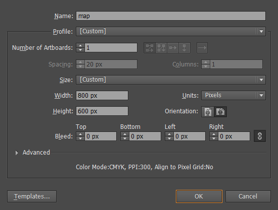
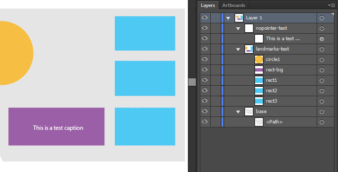
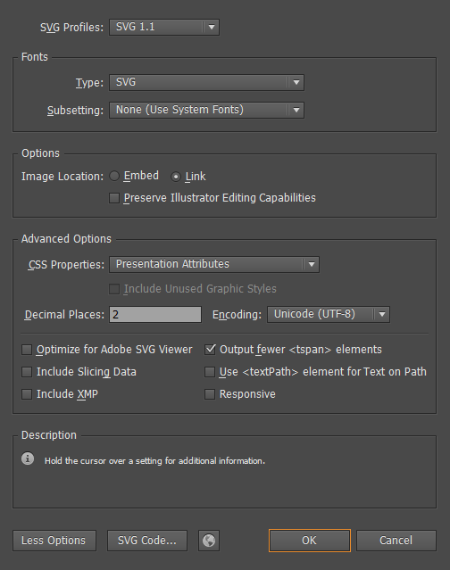

Files
After purchasing Mapplic - Custom Interactive Map jQuery Plugin, a ZIP file can be downloaded from CodeCanyon. This compressed file contains the following two folders:
docs - documentation, a detailed user guide and an SVG map tutorial on creating Mapplic compatible maps
html - plugin files with the required libraries, all the built-in and demo maps
Update
Mapplic comes with free, lifetime updates. Customers can always download the latest version from the CodeCanyon Downloads Page (must be logged in). We will send out notifications on every major update.
Getting Started
Why do we need .json files?
Mapplic separetes map graphics from map data. Graphics are the actual image or vector files, while map data describes everything what's on the map: categories, floors and landmarks.
We came up with this unique solution to prevent embedding map data into html or javascript files. Don't worry, these are simple and raw text files, editable with any txt editor.
Setting up your first map
The easiest way to get started with the plugin is editing one of the included demo .html and .json files. For example, if you need a United States map, try editing the attributes found in usa.json and see what happens if you access usa.html (through web server). The next step could be setting up a new landmark by duplicating an existing location block and editing the attribute values.
In order to import Mapplic into an existing project, you must include the following CSS and JavaScript files:
<!-- Stylesheets (head section) -->
<link rel="stylesheet" type="text/css" href="mapplic/mapplic.css">
<!-- Scripts (after closing body tag) -->
<script type="text/javascript" src="js/jquery.min.js"></script>
<script type="text/javascript" src="js/hammer.min.js"></script>
<script type="text/javascript" src="mapplic/mapplic.js"></script>The plugin is using AJAX for loading map data, which is not allowed in some browsers for local files due to security reasons and you may get this error message: "Data file missing or invalid". The solution is using a web server, it can be either a hosted web server environment or a local solution like XAMPP or MAMP.
Options
As any jQuery plugin, Mapplic has to be called on the page at some point. The function is .mapplic() and it takes a list of optional settings as the first parameter.
/* Initializing the plugin on the div with id="mapplic" */
$('#mapplic').mapplic({
source: 'map-data.json',
height: 480,
minimap: false,
sidebar: true,
hovertip: true,
developer: false,
maxscale: 3
});Full list of options (default value)
source ('location.json') - path to data JSON file or inline JSON object. This path is relative to the HTML file. To use the default value, the data file must have the name 'locations.json', located in the same folder as the index file. Use inline JSON objects if the application is not running on web server (see canada.html for example).
height (420) - height of the component in pixels. The plugin will always take up the available horizontal space, so the width is equal to the parent's width.
landmark (null) - enables Landmark Mode: the map will be focused to the location with ID set as value when the page loads.
mapfill (false) - the map fills the container if true, otherwise the map will fit into the container, as the default behavior.
markers (true) - can be used to disable dynamic markers (pins) on the map.
minimap (true) - enable/disable minimap. Paths to minimap image(s) are set in the .json file.
sidebar (true) - enable/disable sidebar, containing search field and the list of locations.
search (true) - enable/disable search field. It only has meaning if the sidebar is enabled.
lightbox (false) - enable/disable lightbox. The lightbox will only work if the magnific-popup js and css files are loaded.
deeplinking (true) - enable/disable deeplinking feature: every location has it's own URL.
clearbutton (true) - show/hide clear button (bottom left corner of the map).
zoombuttons (true) - show/hide zoom (+/-) buttons (bottom left corner of the map).
hovertip ({ desc: false }) - false will entirely disable the hover tooltip. Setting desc: true will show the description as well.
tooltip ({ thumb: true, desc: true, link: true }) - parts of the tooltip can be enabled/disabled: thumbnail, description and link button.
smartip (true) - enable/disable smart (always visible) tooltip.
mousewheel (true) - enable/disable mousewheel zoom.
fullscreen (false) - show/hide fullscreen button (top left corner of the map).
developer (false) - enable/disable developer mode: displaying coordinates of the cursor.
fillcolor ('#4d5e6d') - the default hex color of interactive elements and colorable pins. Location's fill attribute can override this. Use blank string ('') for no fill.
action ('tooltip') - the default action to perform when a location is focused. Location's action attribute can override this. Currently supported action types are tooltip, open-link, open-link-new-tab, lightbox and none.
maxscale (4) - float value indicating the maximum zoom level. For example, for a file with 600x400 dimensions when it fits, and the limit is set to 2, the maximum zoom will be 1200x800.
skin ('') - apply a user interface skin. Currently the only available option is 'mapplic-dark'.
zoom (true) - enable/disable zoom feature. When disabled, the map will automatically zoom out if tooltips are closed.
Data Structure
Mapplic has its own clean JSON data structure. It is simple text, you can use any text editor and no coding knowledge is required! The easiest way to get familiar with properties and attributes is by examining examples, if you need something that can be found in one of the previews, open the demo .json and see how it is done.
{
"mapwidth": "2000",
"mapheight": "2000",
"categories": [
{
"id": "furniture",
"title": "Furniture",
"color": "#4cd3b8",
"show": "false"
}
],
"levels": [
{
"id": "lower",
"name": "0",
"title": "Lower floor",
"map": "images/apartment/lower.jpg",
"minimap": "images/apartment/lower-small.jpg",
"locations": [
{
"id": "coffeetable",
"title": "Coffee Table",
"description": "This is an awesome coffee table.",
"category": "furniture",
"x": "0.2050",
"y": "0.4660",
"zoom": "3"
},
{
"id": "diningtable",
"title": "Dining Table",
"description": "Dining table for 8.",
"category": "furniture",
"link": "http://codecanyon.net/user/sekler?ref=sekler",
"x": "0.4746",
"y": "0.2883"
}
]
}
]
}The plugin only works if your JSON is valid. A validator like this one might come handy in finding issues. Common mistakes are:
having a comma after the last element of an array ([{},])
not using quotation marks ("") for attribute keys and/or values
Attributes
Below you can find the full list of attributes. Attributes not marked as (optional) are required!
mapwidth - width of the map file(s) in pixels.
mapheight - height of the map file(s) in pixels.
bottomLat (optional) - map file's bottommost latitude
leftLng (optional) - map file's leftmost longitude
topLat (optional) - map file's topmost latitude
rightLng (optional) - map file's rightmost longitude
-
categories []
(optional) - list of categories. It can be completely skipped if there is no need for categories.id - unique ID of the category.
title - title of the category, displayed in the sidebar.
icon (optional) - path to an icon file, displayed in the sidebar.
color (optional) - color of the category, the default color is gray.
show (optional) - default value is true. Setting it to false will make the category collapsed by default.
-
levels [] - list of levels (floors). At least one level is required for a working map.
id - unique ID of the level.
title - title of the level, displayed on the level switcher (top left).
map - path to the map file, relative to the HTML file.
minimap (optional) - path to the minimap file, relative to the HTML file. The minimap must be enabled in the Options to work.
show - setting it to tue will make the level selected by default.
locations [] - list of locations on the level.
id - unique ID of the location. This will appear in the deeplinking URL and you can link a location with an SVG element using this field.
title - title of the location, displayed in sidebar and popup.
about (optional) - short text displayed in the sidebar.
description (optional) - description displayed in the popup, html elements supported.
pin (optional) - type of the pin. This string will be applied as CSS class, so you can add your own styles. Red is the default value. Built-in pins are orange, yellow, green, blue, purple, circle, circular, transparent, iconpin. Set it to hidden for no pin.
Some of the pins can have further modifiers: pin-md (medium size), pin-lg (large-size), pin-xl (extra large size), pin-label (pin with label), pin-pulse (pulsing effect).
For icon pins you also have to add "fa" and "fa-[icon-name]". You can find the full list here.
label (optional) - label displayed on the pin. Max 2-4 characters are supported depending on the size of the pin. pin-label must be added to the pin attribute (see above) for this to work.
category (optional) - ID of the category the location belongs to. There must be a category with this ID.
link (optional) - an internal or external link assigned to the location. The action attribute specifies how this will be used. A "More" button appears in the tooltip by default.
fill (optional) - hex color of the interactive element/colorable pin. If not set, the fillcolor option's value will be used as default.
action (optional) - the action to perform when the location is focused. It can be tooltip to use a tooltip (default), open-link to automatically redirect to the URL from link attribute, open-link-new-tab to open link in a new tab, lightbox to use lightbox as popup or none for zooming only.
If not set, the action option's value will be used as default.
thumbnail (optional) - path to the thumbnail image, relative to the HTML file. Thumbnails are displayed in sidebar and tooltip if enabled.
x - x position of the location. See X and Y coordinates for more information.
y - y position of the location. See X and Y coordinates for more information.
lat (optional) - latitude of the location, if geolocation is supported
lng (optional) - longitude of the location, if geolocation is supported
zoom (optional) - target zoom level when the location is focused. The default value is 4.
X and Y coordinates
Mapplic's coordinate system is based on rational numbers from 0 to 1. As X increases, the position changes from left to right. As Y increases, the position changes from top to bottom. So x = 0.5, y = 0.5 is always the exact center of a map.
To easily find coordinates of a location:
Set the developer option true and a small box showing the cursors positon will appear at the top of the map.
Move your cursor over the desired location and copy the displayed x and y coordinates into your data file.
Geolocation
New feature introduced in Mapplic version 4.0, allows using real latitude and longitude coordinates for positioning landmarks. It only works with maps specially created to support this feature (for example netherlands.html). We are constantly adding new maps with geolocation support to our map base.
A map is geolocation compatible if:
Borders of the map file (bottom latitude, left longitude, top latitude and right longitude) are defined through the bottomLat, leftLng, topLat and rightLng JSON attributes.
The projection of the map is Web Mercator (EPSG:3857), also called Google Web Mercator or WGS 84/Pseudo-Mercator, which is the standard projection for maps on the web.
If the above requirements are met, you can use the lat and lng location attributes to poistion a landmark. You can easily get the lat/lng coordinates of a place using right-click, "What's here" on Google Maps.
Creating SVG Map
Creating a new map or making an existing one compatible with Mapplic requires a few simple steps. It's nothing more than simple naming and grouping convetions.
We are using Adobe Illustrator CC in this tutorial, however older versions of Illustrator can also be used. Inkscape is a free alternative for creating vector graphics, but due to its popularity, the steps are presented in Adobe Illustrator.
Walkthrough
The above video is a walkthrough of creating a simple SVG maps with interactive elements. In the next section each step is explained in detail.
1 Creating New Document
Open Illustrator and create a New Document. Give your document a name, make sure the Units are set to Pixels and choose the desired dimensions (width and height).
Press OK, and an empty, white canvas will appear.
2 Drawing the map
The next step would be the actual drawing of the map. You can always add or edit content, so if it's your first time creating a map, experiment with a few simple shapes, you can add complex drawings later.
Either you've drawn a new map or trying to make an existing one Mapplic compatible, continue from here.
The correct grouping and naming of the SVG elements is very important, it is used by the plugin to identify elements with different behavior (for example the interactive elements of the map). For creating groups and naming elements use the Layers tool (F7). There are three types of elements:
Common elements (environment)
The first type is the common elements. These will be the elements on the map without interactivity. You are free to draw all kinds of shapes or add images without any naming or grouping conventions. In general the environment is non interactive so we're using common elements. On the walkthrough video this would be the base.
Interactive elements (landmarks)
We will refer to the interactive elements of the map as "landmarks". Every named, direct child of a group having a name starting with landmarks is considered a landmark. So create interactive elements as follows.
-
Create a new group. The name of the group MUST start with "landmarks" and cannot contain spaces.
Correct: landmarks-test, landmarks-deparment-shops, landmarks-lots
Incorrect: landmark, test_landmarks, lndmarklots
-
Select the shapes you want to make interactive and move them to the first level of the newly created group, make sure there are no nested groups.
-
Name each landmark with a unique identifier. The names cannot contain spaces! When you will be adding your landmark in your .json data file, you will have to use the same ID for the landmark. The landmark data and SVG shape is connected through this ID so make sure it's UNIQUE!
Nopointer elements (logos/captions)
Sometimes an overlaying element might block the interactivity, for example logos or captions over a landmark. This is where nopointer elements come handy. If an element's or its parent's (direct or indirect) name starts with nopointer, it will be ignored by the mouse pointer.
3 Saving the Map
To save your map as .svg, use the File > Save As option, select the type SVG (*.SVG).
It is advised to:
set at least 2 for the Decimal Places.
Link images (if there is any) instad of embedding.
use Presentation Attributes for CSS Properties if the map has more floors.
With some basic Illustrator skills, anyone can create a Mapplic compatible interactive vector map within minutes. If you have any further questions please get in touch using this contact form.
Customization
In some cases your project might require changes that are not possible through simple options and attributes. We will go through a few commonly requested modifications. If you need further customization, feel free to get in touch, we are available for custom work.
There are three files you might need to edit: mapplic/mapplic.js, mapplic/mapplic.css and css/map.css. To make your CSS changes future proof, it's strongly advised to write the changes in css/map.css, even if the selector already exists.
Resizing the Minimap
By default, the minimap has a width of 140 pixels. To resize it, you have to alter the width, the height will be adjusted automatically maintaining the aspect ratio. It can be resized using the following style:
.mapplic-minimap {
width: 200px;
}
Relocating Components
You might want to relocate the UI elements (minimap, level switcher, clear button, fullscreen button, zoom buttons). Use the top/right/bottom/left attributes to move them. For example, if we wanted to move the level switcher to the top-left corner:
.mapplic-levels {
top: 0;
left: 0;
}
Making the link open in a new Tab/Window
Use text editor's search feature to find the first line, and replace it with the second:
// find this:
this.link = $('<a>More</a>').addClass('mapplic-tooltip-link').attr('href', '#').hide().appendTo(this.el);
// replace with this:
this.link = $('<a>More</a>').addClass('mapplic-tooltip-link').attr('href', '#').attr('target', '_blank').hide().appendTo(this.el);
API
Since version 4.0 Mapplic comes with a list of public methods and events to provide even more flexibility. Using the API is highly advised for future-proof plugin modifications, you can avoid losing changes when updating to a new version.
Events
Events can be bound to initialized Mapplic instances. List of public events currently available:
mapready - the maps is fully loaded
locationopened - a location is focused
locationclosed - a location is closed
levelswitched - the active level is switched
positionchanged - map movement performed (zoom or pan)
// Initializing the plugin on <div id="mapplic"></div>
// Selector saved in map variable
var map = $('#mapplic').mapplic({
source: 'apartment.json',
height: 460,
mapfill: true,
lightbox: true,
maxscale: 1
});
// EXAMPLES (apartment.html)
// Map ready
map.on('mapready', function(e, self) {
console.log('Map is ready!')
// self grants direct access to the map object
// The map will be focused on the washing machine by default
self.moveTo(0.67, 0.62, 3, 0);
});
// Location opened
map.on('locationopened', function(e, location) {
// location grants full access to the location
console.log(location.title + ' opened.');
});
// Location closed
map.on('locationclosed', function(e) {
console.log('Location closed.');
});
// Level switched
map.on('levelswitched', function(e, level) {
console.log('Switched to ' + level + ' level.');
});
// Position changed
map.on('positionchanged', function(e, self) {
// self grants direct access to the map object
console.log('Pan or zoom performed, current scale: ' + self.scale);
});Methods
Metods are public function performing basic tasks. You can call them using the map object which can be accessed by calling .data('mapplic') on the selector. The map object also grants access to components and other variables. Currently supported public methods are:
switchLevel(target) - switch to level with ID target
moveTo(x, y, s, d) - move to position x, y on scale s in d milliseconds
getLocationData(id) - get the data object of location
showLocation(id, d) - focus to location in d milliseconds
hideLocation() - close currently active location
updateLocation(id) - update location on the map
// Initializing the plugin on <div id="mapplic"></div>
// Selector saved in map variable
var map = $('#mapplic').mapplic({
source: 'apartment.json',
height: 460,
mapfill: true,
lightbox: true,
maxscale: 1
});
// Access to map object from selector
var self = map.data('mapplic');
// EXAMPLE 1 (world-high.html)
// Showing visitor's geolocation
map.on('mapready', function(e, self) {
// Update location with geoposition
if (navigator.geolocation) {
navigator.geolocation.getCurrentPosition(function(pos) {
var location = self.getLocationData('pos');
location.lat = pos.coords.latitude;
location.lng = pos.coords.longitude;
self.updateLocation('pos');
});
}
else console.log('Geolocation not enabled.');
});
// EXAMPLE 2
// Switch level from external button
$(document).on('click', '#goto-level1-button', function(e) {
e.preventDefault();
self.switchLevel('level1');
});Others
Thank you for reading the docs carefully. In case you found anything wrong or incomplete please let us know. We are working hard to provide an affordable, premium quality custom map solution.
If you like the plugin please consider rating it with 5 stars on CodeCanyon.
Credits
jQuery Library
jQuery Mouse Wheel - mousewheel
Hammer.js - pinch zoom
Magnific Popup - lightbox
FontAwesome - icon fonts
Changelog
Version 4.0 - June 10th, 2016
- GEOLOCATION feature - LIGHTBOX support - API with basic methods and events - new built in map: The Netherlands - improved responsive behavior - pin label support - new pin types - description in hover tooltip - tooltip with thumnail - default fill color and default action - mousewheel setting - css and javascript optimizations - hammer.js updated to version 2.0.6
Version 3.1 - May 27th, 2015
- SMART TOOLTIP - tooltip now repositions itself and it's always visible - 7 new built in maps: Continents, Australia, Italy, Switzerland, Russia, China, Brazil - inline JSON support - possibility to link floors - introdution of UI themes - tooltip scroll bug fixed - small CSS fixes
Version 3.0 - January 31st, 2015
- 7 built in maps: World, Europe, USA, Canada, France, Germany, England - new generation of interactive SVG maps (old method still supported) - deeplinking engine rewritten (hash > query parameter) - zoom buttons (+/-) added - map in container: fit or fill - mobile optimiztaion - retina support - hammer.js updated to version 2.0.4 - new pin types added - fontawesome icons for pins - drag&drop fix: now clickable areas can be dragged as well without activating them - small design changes
Version 2.0.1 - August 2nd, 2014
- fullscreen bug fixed - IE9 tooltip close/clear button bug fixed
Version 2.0 - June 6th, 2014
- PINCH ZOOM added for touch devices - hybrid mode added (now you can have clickable shapes and pins on the same map) - developer mode added (easy to find x/y coordinates) - tooltip rewritten to support any data (ex. youtube videos) - tooltip dynamic width - tooltip dynamic height (with scrollbar if needed) - smart tooltip positioning - fullscreen button added - search feature improved - SVG tutorial included - hover tooltip added - pin animations added - ajax preloader added - new flat design - source code improved and greatly optimized - and many more
Version 1.0.1 - December 8th, 2013
- minimap click event fixed - responsivity bug fixed (list and search shown on mobile devices)